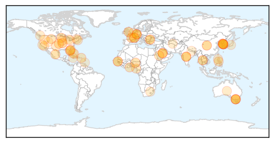
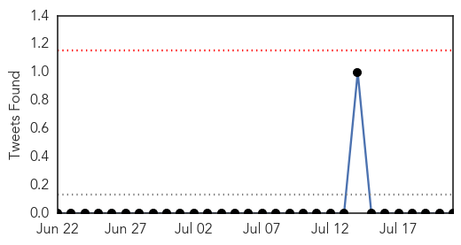
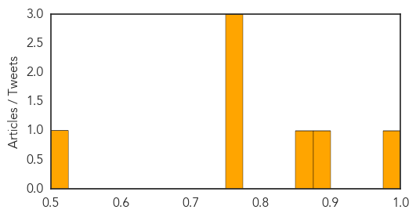

Unknown
30-Day Web Trend
0 alerts, 0 warnings
30-Day Twitter Trend
0 alerts, 0 warnings
Article Locations
Article Confidences

Top Articles:
- 0.997
- S. Korea reports no new MERS cases for 16th day
- 0.996
- (LEAD) S. Korea reports no new MERS cases for 16th day
- 0.994
- (LEAD) S. Korea reports no new MERS cases for 16th day
- 0.975
- Normality returns to hospital at centre of Korea MERS crisis
- 0.969
- MERS-hit hospital resumes service - Regional
- 0.945
- How Serious is malaria disease in the Gambia during the raining season
- 0.933
- 10-40% Food-Borne Listeria Cases in Texas Go Untracked
- 0.925
- New York City issues advisory after imported Brucella melitensis cases expose microbiology laboratory workers
- 0.891
- Who will rescue Nigeria health sector from total collapse?
- 0.874
- KBS World Radio
- 0.870
- Steer clear of armadillos
- 0.831
- Drug cocktails can stop sexual transmission of HIV, researchers say
- 0.816
- Wyoming issues tularemia warning
- 0.810
- B.C. patient questions accuracy of Lyme disease test used by province
- 0.798
- Anthrax update: Spread of infection has been halted in Bulgaria
- 0.787
- Sarangani supports call to end HIV/AIDS
- 0.784
- Ghana adopts tough measures to contain bird flu
- 0.780
- Why Florida Leprosy Cases Are on the Rise
- 0.773
- Malaria Rears Its Ugly Head in Puerto Rico
- 0.762
- No to health ministry
- 0.759
- Don’t deprive hajj pilgrims of life saving health, experts warn
- 0.733
- Doctors and medical students in India should stop wearing white coats
- 0.732
- African Health Ministers urge quick establishment of Africa CDC
- 0.724
- Rise of leprosy cases in Florida blamed on armadillos
- 0.690
- High Tea salmonella outbreak at Melbourne’s Langham Hotel hits 34 people
- 0.687
- Salmonella outbreak linked to Melbourne hotel's high tea
- 0.687
- Salmonella outbreak linked to Melbourne hotel's high tea
- 0.670
- Number of foreign visitors to South Korea drops
- 0.655
- Health Officials: Jamaica Pond Closed Due to Hazardous Water Conditions
- 0.655
- All 28 individuals test negative for anthrax over possible outbreak in Bulgaria’s Varna District
- 0.654
- Teen's HIV remission raises hope of cure for Aids, Europe News & Top Stories
- 0.654
- French Teen’s HIV Infection Under Control For 12 Years, Even Without DrugsPhenomenica
- 0.652
- La Crosse – WKBT News8000.com
- 0.650
- Less foreign visitor to S.Korea in June on MERS shock
- 0.649
- Sorry, deze pagina kon niet gevonden worden.
- 0.647
- Philstar Mobile
- 0.644
- Number of foreign visitor to S.Korea tumbles in June on MERS shock
- 0.641
- Number of foreign visitor to S.Korea tumbles in June on MERS shock - Xinhua
- 0.632
- Confirmed Case of Hantavirus in Texas Panhandle Prompts
- 0.627
- Salmonella linked to Melbourne hotel: report
- 0.623
- WSU News Washington State University
- 0.623
- Apohealth Diarrhoea Relief Plus (Loperamide hydrochloride and Simethicone) Drug
- 0.621
- Meeting the Triple Aim with new pain management protocols
- 0.618
- MRC hands over borehole to Fajikunda Health Centre
- 0.603
- Offre d'emploi industrie pharmaceutique
- 0.594
- Antiretrovirals credited for TB decline
- 0.583
- Studies confirm that early drugs halt AIDS, prevent spread - KVOA
- 0.583
- Can Your Community Hospital Handle ... This?
- 0.582
- Health ministry warns doctor group, drug body over expired polio vaccines
- 0.577
- WHO receives Turkmenistan State award for collaboration in public health
Showing top 50 articles...
Top Tweets:
-
No tweets found for Jul 21, 2015
Influenza
30-Day Web Trend
1 alerts, 0 warnings
30-Day Twitter Trend
0 alerts, 0 warnings

Article Locations

Article Confidences
Top Articles:
Top Tweets:
-
No tweets found for Jul 21, 2015